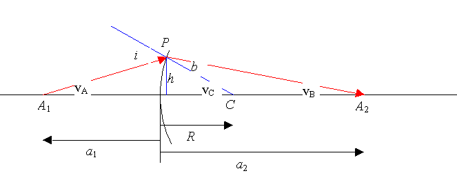
På ovenstående billede brydes en stråle fra A1 i kuglefladen i punktet P og rammer atter aksen i punktet A2. Vi vil nu vise, at alle andre stråler fra A1, som er paraxiale, dvs. danner en lille vinkel med aksen også rammer i A2 efter brydningen. Strålen går fra luft med brydningsindeks 1 til et stof med brydningsindeks n.
For små vinker er sin(v) » v. Husk, at vi regner i radianer.
Derfor kan brydningsloven omskrives til:
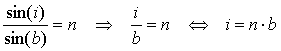
Da en supplementvinkel til en vinkel i en trekant er lig med summen af de to andre vinker er:
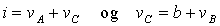
I disse to ligninger isoleres henholdsvis i og b og indsættes i i = n·b , og vi får:
*)
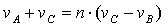
Ved hjælp af figuren findes:
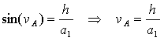
idet sinus til en lille vinkel er lig med vinklen. Tilsvarende findes:
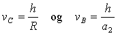
Disse udtryk indsættes i *), og vi får:
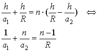
Bemærk, at h ikke indgår i det sidste udtryk. Dvs. at afstanden a2 kan beregnes, når r og a1 er kendt, og a2 er uafhængig af den vinkel, som den indkomne stråle danner med aksen.
En stråle parallel med aksen, svarer til at A1 går mod minus uendelig. I så fald går første led i sidste ligning går med 0. Vi ser, at strålen efter brydningen rammer i afstanden:
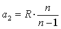
Denne afstand kaldes fokallængden f2, eller bare brændvidden.
Bemærk, at stråler der kommer ind parallelt med aksen fra højre, svarende til at a2 går mod uendelig rammer aksen i:
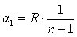
Fokallængderne (brændvidderne) f1 og f2 er således ikke ens! Det var heller ikke at forvente, når man tænker på brydningsloven.
Linsemagerens formel
En tynd linsens brændvidde kan beregnes vha. af formlerne for brydning i en kugleflade. Den tynde linse består jo af to kugleflader.
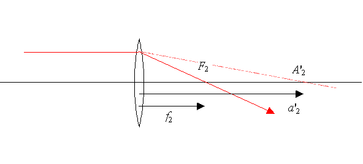
Hvis strålen kun blev brudt i venstre linseflade, ville den ramme i A'2. Vi siger, at der dannes et virtuelt billede i A'2. Dette billede afbildes af højre linseflade i F2.
Ifølge formlerne i foregående afsnit er a'2 bestemt ved:
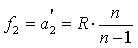
Idet strålen ved den 2. brydning går fra glas til luft og a'2 regnes negativ, fordi billedet er virtuelt fås ved indsættelse i:
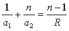
at
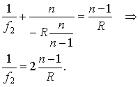
Denne formel gælder for en symmetrisk linse i luft.
Hvis de to kugleradier ikke er ens, er linsen asymmetrisk, og der gælder linsemagerens formel:
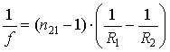
Her er n21 det relative brydningsindeks. Bemærk, at f2 = f1 = f, når der er samme medium på begge sider af linsen.
En optiker vil lave en plankonveks linse med styrken, D = 2,0 dioptrier. Glassets brydningsindeks er n = 1,52.
Beregn kuglefladens radius. (Sæt 1/R2 til 0 i linsemagerens formel.)